용접산업기사 (2017-03-05 기출문제)
1과목: 용접야금 및 용접설비제도
1. 다음 스테인리스강 중 용접성이 가장 우수한 것은?
- 페라이트 스테인리스강
- 펄라이트 스테인리스강
- 마텐자이트계 스테인리스강
- 오스테나이트계 스테인리스강
(정답률: 87%)

2. 용접균열 중 일반적인 고온 균열의 특징으로 옳은 것은?
- 저합금강의 비드균열, 루트균열 등이 있다.
- 대입열량의 용접보다 소입열량의 용접에서 발생하기 쉽다.
- 고온균열은 응고과정에서 발생하지 않고, 응고 후에 많이 발생한다.
- 용접금속 내에서 종균열, 횡균열, 크레이터 균열 형태로 많이 나타난다.
(정답률: 68%)
3. Fe-C 평행상태도에서 나타나는 불변반응이 아닌 것은?
- 포석반응
- 포정반응
- 공석반응
- 공정반응
(정답률: 63%)
4. 다음 중 전기 전도율이 가장 높은 것은?
- Cr
- Zn
- Cu
- Mg
(정답률: 88%)
5. 청열취성이 발생하는 온도는 약 몇 ℃인가?
- 250
- 450
- 650
- 850
(정답률: 67%)
6. 다음 중 재질을 연화시키고 내부응력을 줄이기 위해 실시하는 열처리 방법으로 가장 적합한 것은?
- 풀림
- 담금질
- 크로마이징
- 세라다이징
(정답률: 90%)
7. 다음 중 황의 함유량이 많을 경우 발생하기 쉬운 취성은?
- 적열취성
- 청열취성
- 저온취성
- 뜨임취성
(정답률: 87%)
8. 다음 중 일반적인 금속재료의 특징으로 틀린 것은?
- 전성과 연성이 좋다.
- 열과 전기의 양도체이다.
- 금속 고유의 광택을 갖는다.
- 이온화하면 음(-)이온이 된다.
(정답률: 86%)
9. 강의 내부에 모재 표면과 평행하게 층상으로 발생하는 균열로, 주로 T이음, 모서리 이음에서 볼 수 있는 것은?
- 토우 균열
- 설퍼 균열
- 크레이터 균열
- 라멜라 티어 균열
(정답률: 64%)
10. 다음 중 용접 후 잔류응력을 제거하기 위한 열처리 방법으로 가장 적합한 것은?
- 담금질
- 노내풀림법
- 실리코나이징
- 서브제로처리
(정답률: 76%)
11. 사투상도에 있어서 경사축의 각도로 가장 적합하지 않은 것은?
- 20°
- 30°
- 45°
- 60°
(정답률: 79%)
12. 제3각법의 투상도 배치에서 정면도의 위쪽에는 어느 투상면이 배치되는가?
- 배면도
- 저면도
- 평면도
- 우측면도
(정답률: 86%)
13. 일부를 도시하는 것으로 충분한 경우에는 그 필요 부분만을 표시하는 투상도는?
- 부분 투상도
- 등각 투상도
- 부분 확대도
- 회전 투상도
(정답률: 85%)
14. 다음 선의 종류 중 특수한 가공을 하는 부분 등 특별한 요구사항을 적용할 수 있는 범위를 표시하는데 사용하는 선은?
- 굵은 실선
- 굵은 1점 쇄선
- 가는 1점 쇄선
- 가는 2점 쇄선
(정답률: 56%)
15. 다음 중 기계를 나타내는 KS 부분별 분류기호는?
- KS A
- KS B
- KS C
- KS D
(정답률: 88%)
16. 복사한 도면을 접을 때 그 크기는 원칙적으로 어느 사이즈로 하는가?
- A1
- A2
- A3
- A4
(정답률: 87%)
17. 탄소강 단강품인 SF 340A에서 340이 의미하는 것은?
- 종별번호
- 탄소 함유량
- 열처리 상황
- 최저 인장강도
(정답률: 79%)
18. 용접부 보조 기호 중 영구적인 덮개 판을 사용하는 기호는?
(정답률: 81%)
19. KS 용접 기호 중 Z
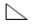
n×L(e)에서 n이 의미하는 것은?- 피치
- 목 길이
- 용접부 수
- 용접 길이
(정답률: 85%)
20. 다음 용접 기호 중 가장자리 용접에 해당되는 기호는?
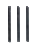
(정답률: 86%)
2과목: 용접구조설계
21. 용접균열의 발생 원인이 아닌 것은?
- 수소에 의한 균열
- 탈산에 의한 균열
- 변태에 의한 균열
- 노치에 의한 균열
(정답률: 55%)
22. 그림과 같은 용접이음에서 굽힘 응력을 σb라 하고, 굽힘 단면계수를 Wb라 할 때, 굽힘 모멘트 Mb를 구하는 식은?
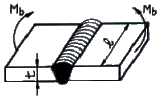
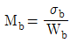
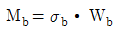
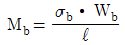
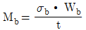
(정답률: 54%)
23. 두께가 5 ㎜ 인 강판을 가지고 다음 그림과 같이 완전 용입의 맞대기 용접을 하려고 한다. 이 때 최대 인장하중을 50000N 작용 시키려면 용접 길이는 얼마인가? (단, 용접부의 허용 인장응력은 100 MPa 이다.)
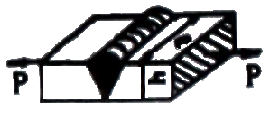
- 50 ㎜
- 100 ㎜
- 150 ㎜
- 200 ㎜
(정답률: 79%)
24. 용접부의 변형교정 방법으로 틀린 것은?
- 롤러에 의한 방법
- 형재에 대한 직선 수축법
- 가열 후 해머링 하는 방법
- 후판에 대하여 가열 후 공랭하는 방법
(정답률: 47%)
25. 용접 이음을 설계할 때 주의사항으로 틀린 것은?
- 국부적인 열의 집중을 받게 한다.
- 용접선의 교차를 최대한으로 줄여야 한다.
- 가능한 아래보기 자세로 작업을 많이 하도록 한다.
- 용접 작업에 지장을 주지 않도록 공간을 두어야 한다.
(정답률: 88%)
26. 용접부 이음 강도에서 안전율을 구하는 식은?
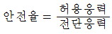
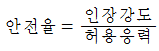
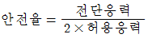
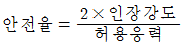
(정답률: 87%)
27. 맞대기 용접부의 접합면에 홈(groove)을 만드는 가장 큰 이유는?
- 용접 변형을 줄이기 위하여
- 제품의 치수를 맞추기 위하여
- 용접부의 완전한 용입을 위하여
- 용접 결함 발생을 적게 하기 위하여
(정답률: 83%)
28. 용접비용을 줄이기 위한 방법으로 틀린 것은?
- 용접지그를 활용 한다.
- 대기 시간을 길게 한다.
- 재료의 효과적인 사용계획을 세운다.
- 용접이음부가 적은 경제적인 설계를 한다.
(정답률: 92%)
29. 용접 결함 중 기공의 발생 원인으로 틀린 것은?
- 용접 이음부가 서냉될 경우
- 아크 분위기 속에 수소가 많을 경우
- 아크 분위기 속에 일산화탄소가 많을 경우
- 이음부에 기름, 페인트 등 이물질이 있을 경우
(정답률: 78%)
30. 용접부의 결함 중 구조상의 결함에 속하지 않는 것은?
- 기공
- 변형
- 오버랩
- 융합 불량
(정답률: 79%)
31. 용접 시험에서 금속학적 시험에 해당하지 않는 것은?
- 파면 시험
- 피로 시험
- 현미경 시험
- 매크로 조직시험
(정답률: 44%)
32. 용접전류가 120A, 용접전압이 12V, 용접속도가 분당 18㎝/min 일 경우에 용접부의 입열량은 몇 Joule/㎝인가?
- 3500
- 4000
- 4800
- 5100
(정답률: 69%)
33. 레이저 용접장치의 기본형에 속하지 않는 것은?
- 반도체형
- 에너지형
- 가스 방전형
- 고체 금속형
(정답률: 49%)
34. 강판을 가스 전단할 때 절단열에 의하여 생기는 변형을 방지하기 위한 방법이 아닌 것은?
- 피절단재를 고정하는 방법
- 절단부에 역변형을 주는 방법
- 절단 후 절단부를 수냉에 의하여 열을 제거하는 방법
- 여러 대의 절단 토치로 한꺼번에 평행 절단하는 방법
(정답률: 36%)
35. 용접시공 시 엔드 탭(end tab)을 붙여 용접하는 가장 주된 이유는?
- 언더컷의 방지
- 용접변형의 방지
- 용접 목두께의 증가
- 용접 시작점과 종점의 용접결함 방지
(정답률: 82%)
36. 다음 중 접합하려고 하는 부재 한쪽에 둥근 구멍을 뚫고 다른 쪽 부재와 겹쳐서 구멍을 완전히 용접하는 것은?
- 가 용접
- 심 용접
- 플러그 용접
- 플레어 용접
(정답률: 79%)
37. 용접 시공 전에 준비해야 할 사항 중 틀린 것은?
- 용접부의 녹 부분은 그대로 둔다.
- 예열, 후열의 필요성 여부를 검토한다.
- 제작 도면을 확인하고 작업 내용을 검토한다.
- 용접 전류, 용접 순서, 용접 조건을 미리 정해둔다.
(정답률: 92%)
38. 용접 균열의 종류 중 맞대기 용접, 필릿 용접 등의 비드 표면과 모재와의 경계부에 발생하는 균열은?
- 토 균열
- 설퍼 균열
- 헤어 균열
- 크레이터 균열
(정답률: 58%)
39. 가 용접(tack welding)에 대한 설명으로 틀린 것은?
- 가 용접에는 본 용접보다도 지름이 약간가는 용접봉을 사용한다.
- 가 용접은 쉬운 용접이므로 기량이 좀 떨어지는 용접사에 의해 실시하는 것이 좋다.
- 가 용접은 본 용접을 하기 전에 좌우의 흠 부분을 잠정적으로 고정하기 위한 짧은 용접이다.
- 가 용접은 슬래그 섞임, 기공 등의 결함을 수반하기 때문에 이음의 끝 부분, 모서리 부분을 피하는 것이 좋다.
(정답률: 91%)
40. 용접부 초음파 검사법의 종류에 해당되지 않는 것은?
- 투과법
- 공진법
- 펄스반사법
- 자기반사법
(정답률: 58%)
3과목: 용접일반 및 안전관리
41. 가스 용접에서 판 두께를 t(㎜)라고 하면 용접봉의 지름(㎜)를 구하는 식으로 옳은 것은? (단, 모재의 두께는 1 ㎜ 이상인 경우이다.)
- D=t+1
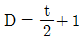
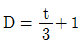
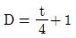
(정답률: 76%)
42. 연강판 가스 절단시 가장 적합한 예열 온도는 약 몇 ℃인가?
- 100~200
- 300~400
- 400~500
- 800~900
(정답률: 44%)
43. 직류 역극성(reverse polarity)을 이용한 용접에 대한 설명으로 옳은 것은?
- 모재의 용입이 깊다.
- 용접봉의 용융 속도가 느려진다.
- 용접봉을 음극(-), 모재의 양극(+)에 설치한다.
- 얇은 판의 용접에서 용략을 피하기 위하여 사용한다.
(정답률: 57%)
44. 다음 중 열전도율이 가장 높은 것은?
- 구리
- 아연
- 알루미늄
- 마그네슘
(정답률: 86%)
45. 다음 연료가스 중 발열량(kcal/m2)이 가장 많은 것은?
- 수소
- 메탄
- 프로판
- 아세틸렌
(정답률: 55%)
46. 아크 용접기로 정격2차 전류를 사용하여 4분간 아크를 발생시키고 6분을 쉬었다면 용접기의 사용률은?
- 20 %
- 30 %
- 40 %
- 60 %
(정답률: 79%)
47. 용접 자동화에서 자동제어의 특징으로 틀린 것은?
- 위험한 사고의 방지가 불가능하다.
- 인간에게는 불가능한 고속작업이 가능하다.
- 제품의 품질이 균일화되어 불량품이 감소된다.
- 적정한 작업을 유지할 수 있어서 원자재, 원료 등이 절약된다.
(정답률: 91%)
48. 강재 표면의 흠이나 개재물, 탈탄층 등을 제거하기 위하여 얇게 타원형 모양으로 표면을 깎아내는 가공법은?
- 스카핑
- 피닝법
- 가스 가우징
- 겹치기 절단
(정답률: 76%)
49. 불활성 가스 텅스텐 아크 용접을 할 때 주로 사용하는 가스는?
- H2
- Ar
- CO2
- C2H2
(정답률: 86%)
50. 용접에 사용되는 산소를 산소용기에 충전시키는 경우 가장 적당한 온도와 압력은?
- 35℃, 15Mpa
- 35℃, 30Mpa
- 45℃, 15Mpa
- 45℃, 18Mpa
(정답률: 78%)
51. 서브머지드 아크 용접(SAW)의 특징에 대한 설명으로 틀린 것은?
- 용융속도 및 용착속도가 빠르며 용입이 깊다.
- 특수한 지그를 사용하지 않는 한 아래보기 자세에 한정된다.
- 용접선이 짧거나 불규칙한 경우 수동 용접에 비하여 능률적이다.
- 불가시 용접으로 용접 도중 용접상태를 육안으로 확인할 수가 없다.
(정답률: 58%)
52. 다음 중 압접에 속하지 않는 것은?
- 마찰 용접
- 저항 용접
- 가스 용접
- 초음파 용접
(정답률: 65%)
53. 일반적인 용접의 특징으로 틀린 것은?
- 작업 공정이 단축되며 경제적이다.
- 재질의 변형이 없으며 이음효율이 낮다.
- 제품의 성능과 수명이 향상되며 이종 재료도 접합할 수 있다.
- 소음이 적어 실내에서의 작업이 가능하며 복잡한 구조물 제작이 쉽다.
(정답률: 86%)
54. 피복 아크 용접에서 피복제의 역할로 틀린 것은?
- 용착 효율을 높인다.
- 전기 절연 작용을 한다.
- 스패터 발생을 적게 한다.
- 용착금속의 냉각속도를 빠르게 한다.
(정답률: 83%)
55. 직류 용접기와 비교한 교류 용접기의 특징으로 틀린 것은?
- 무부하 전압이 높다.
- 자기쏠림이 거의 없다.
- 아크의 안전성이 우수하다.
- 직류보다 감전의 위험이 크다.
(정답률: 54%)
56. 다음 중 피복 아크 용접기 설치장소로 가장 부적절한 곳은?
- 진동이나 충격이 없는 장소
- 주위온도가 -10℃ 이하인 장소
- 유해한 부식성 가스가 없는 장소
- 폭발성 가스가 존재하지 않는 장소
(정답률: 91%)
57. 레일의 접합, 차축, 선박의 프레임 등 비교적 큰 단면을 가진 주조나 단조품의 맞대기 용접과 보수용접에 사용되는 용접은?
- 가스 용접
- 전자빔 용접
- 테르밋 용접
- 플라즈마 용접
(정답률: 79%)
58. 용접시 필요한 안전 보호구가 아닌 것은?
- 안전화
- 용접 장갑
- 핸드 실드
- 핸드 그라인더
(정답률: 93%)
59. 산소 및 아세틸렌 용기와 취급시 주의 사항으로 틀린 것은?
- 용기는 가연성 물질과 함께 뉘어서 보관할 것
- 통풍이 잘 되고 직사광선이 없는 곳에 보관할 것
- 산소 용기의 운반시 밸브를 닫고 캡을 씌워서 이동할 것
- 용기의 운반시 가능한 운반기구를 이용하고, 넘어지지 않게 주의할 것
(정답률: 94%)
60. 불활성 가스 금속 아크 용접에서 이용하는 와이어 송급 방식이 아닌 것은?
- 풀 방식
- 푸시 방식
- 푸시-풀 방식
- 더블-풀 방식
(정답률: 81%)